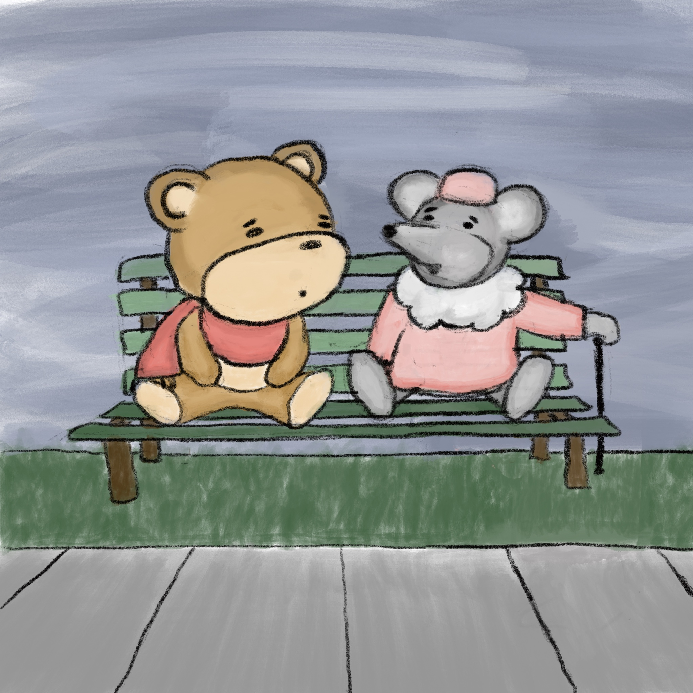
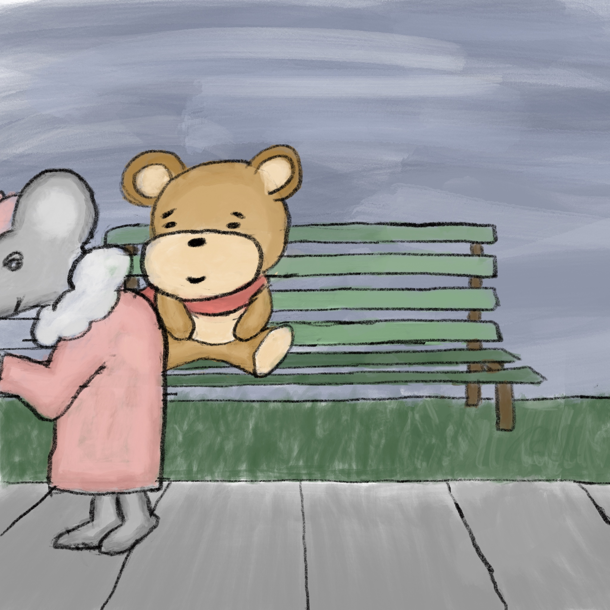
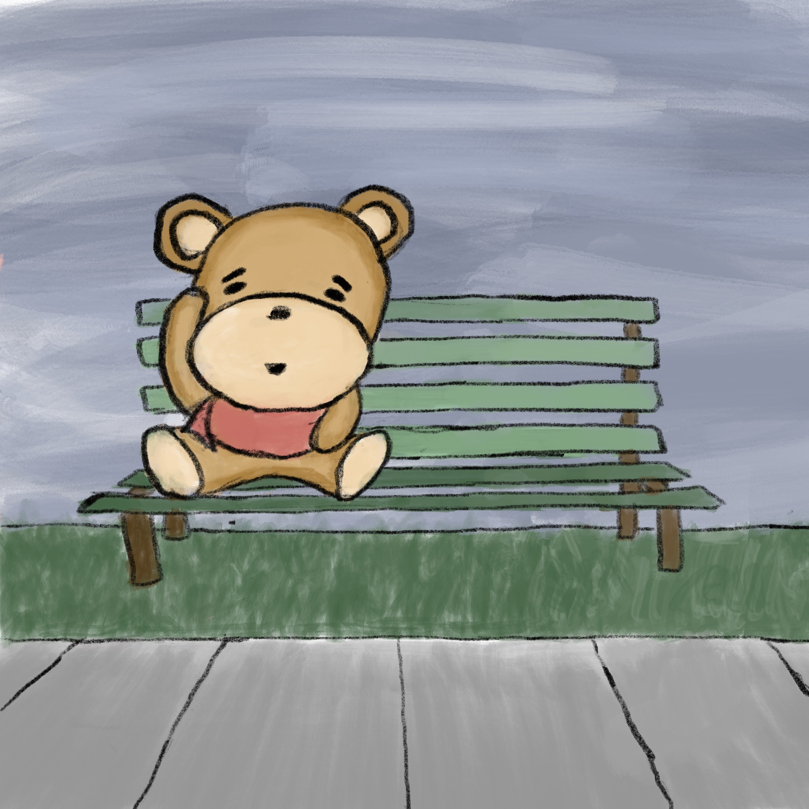

“That was the poem ‘Wild Geese’ by Mary Oliver,” the mouse said, as the bear emerged from his dream. “I find it always helps me when I’m having a hard time. I thought it might help you too.” #70

“It does, it really does,” the bear said sincerely. “I’m glad,” the mouse smiled, “and my legs are feeling better again, so I’ll be on my way. I wish you well, little bear.” And with that, she sauntered off, as quickly as she had arrived. #71

The bear sat for a moment, scratching his head and smiling softly to himself, playing the scenes from the poem back through his head. “How could such a simple thing as a poem touch me so deeply?” He wondered. “Anyway, it’s time for me to get back to my walk, I’ve been sitting here for far too long!” #72